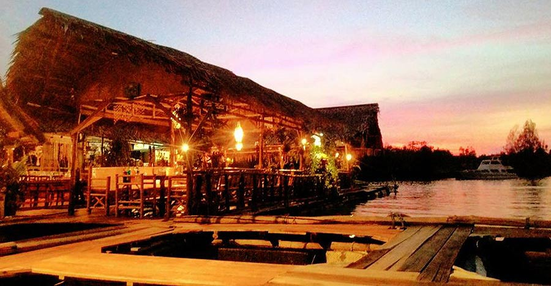

|

เกาะกลางซีฟู้ด
เริ่มที่ร้านแรกเกาะกลางซีฟู้ด เป็นร้านอาหารทะเลสดๆ ฮาลาล บรรยากาศดี ลมเย็นสบาย ตั้งอยู่บนแพลอยน้ำ ชื่อร้านนั้นมาจากชื่อเกาะกลาง เป็นเกาะที่อยู่หน้าเมืองกระบี่ การเดินทางมาที่เกาะกลางนักท่องเที่ยวต้องมาด้วยทางเรือเท่านั้นจากท่าเรือเจ้าฟ้าธารา ใช้เวลาเดินทางประมาณ 10 นาที วัตถุดิบที่นำมาประกอบอาหารสดมาก เนื่องจากนำมาจากทางกระชังของทางร้านเอง เมนูแนะนำมี แกงส้มกุ้ง ปูดำผัดผงกะหรี่ ปลาหมึกผัดไข่เค็ม ปลาเก๋าทอดซีอิ๊ว ใครมาเที่ยวกระบี่แนะนำไปร้านนี้ได้เลย ได้ทั้งความอร่อยและความเพลิดเพลินท่ามกลางบรรยากาศแบบธรรมชาติ
|